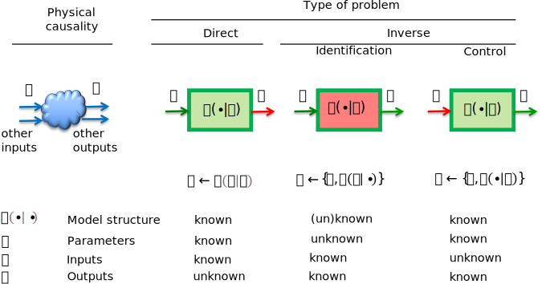

Theory in a nutshell#
This chapter presents the theory used in this book. It starts with the basic principles of modeling heat transfer in buildings by using thermal networks, continues with the matrix representation of thermal networks as a system of differential-algebraic equations and ends with obtaining the state-space representation.
Physical and computational causality#
Physical causality is a fundamental principle in physics that states that any modification of a physical variable is caused by other variable or variables (see Physical causality in Figure 1). The dependent variables (or the effects) are the outputs and the independent variables (or the causes) are the inputs of the physical system (Ghiaus 2022). In a dynamic system, the cause always preceeds the effect (Ghiaus 2014).
Computational causality is the input-output relationship in a computer-implemented algorithm (or computational model).

Figure 1. Direct and inverse problems. Green represents what is known and red what is unknown, i.e., the inputs and the outputs of the computational model, respectively.
Direct and inverse problems#
The direct (or foreward) problem is when the set of inputs of the computational model is a subset of the inputs of the physical model and the set of outputs of the computational model is a subset of the outputs of the physical model (see Direct problem in Figure 1). For a direct problem, the model (i.e., its structure and parameters) and the inputs are known; the problem is to find the outputs of the physical model. In the case of a direct problem, the information flows (from inputs to outputs) are the same for the physical system and for the computational model. Direct problems are called network analysis in the case of electrical, hydraulic, or thermal circuits. The term computer simulation is also often used. The advantage of direct problems is that the mathematical models of physical systems are deterministic and well posed (the problem has a solution and the solution is unique).
The inverse problems are of two types: control and model identification (see Inverse problem in Figure 1). The control problem consists in finding an input of the physical system that produces a desired output when its model is known (see Control problem in Figure 1). For simple cases, the problem can be solved by inversing the direct problem. Usually, and especially for dynamic models, the inversion is not possible. Therefore, the problem is stated as a control loop for which a set of direct problems is solved (Ghiaus 2013).
In model identification, the problem is to find the model of the physical system when its inputs and outputs are given. Usually, the problem is treated as parameter identification by imposing the structure of the model and solving an optimisation problem in which the arguments are the parameters and the cost function depends on the type of problem (see Parameter identification or optimization problem in Figure 1).
Physical laws in transport phenomena#
In engineering, physics, and chemistry, transport phenomena concerns the interchange of mass, energy, charge, momentum, and angular momentum between systems. Although it draws insights from various disciplines, such as continuum mechanics and thermodynamics, tranport phenomena share common principles and mathematical frameworks.
Conservation laws#
In physics, a conservation law asserts that a specific measurable attribute of an isolated physical system, \(Q\), remains constant as the system progresses through time. Usually, the flow-rate of the conservative variable, \(\dot{Q} \equiv q\), is used. For example, in heat transfer, the flow-rate is conserved:
Fundamental conservation laws encompass the preservation of mass-energy, linear momentum, angular momentum, and electric charge. Conservation laws are related to physical symmetry.
Constitutive laws#
In physics and engineering, a constitutive law establishes a relation between two or more physical quantities which is specific to a material, substance, or field. It models the material’s or substance’s response to external stimuli, typically in the form of applied fields or forces.
Constitutive equations vary in their nature; some are purely phenomenological, while others are derived from fundamental principles. A prevalent form of constitutive equation often expresses a simple proportionality utilizing a parameter that represents a material property, such as thermal or electrical conductivity or a spring constant. For example, in heat transfer, the relation between flow-rate, \(q\), and temperature difference, \(\Delta \theta\), is:
where \(G_i\) is the thermal conductance.
Constitutive relations may also be adjusted to incorporate nonlinear behavior.
Linear algebra#
Models of the transport phenomena can be obtained as systems of linear equations by combining the conservation laws with constitutive laws. Direct and inverse problems by using linear algebra for environmental heat transfer is the subject of this book.
References#
Ghiaus, C. (2013). Causality issue in the heat balance method for calculating the design heating and cooling loads, Energy 50: 292-301, (open access preprint hal-03605823)
Ghiaus, C. (2014). Linear algebra solution to psychometric analysis of air-conditioning systems. Energy, 74, 555-566. (open access preprint hal-01289400)
Ghiaus, C. (2021). PsychrAn_cool: Psychrometric analysis of cooling systems as a control problem. Zenodo.
Ghiaus, C. (2022). Computational psychrometric analysis as a control problem: case of cooling and dehumidification systems. Journal of Building Performance Simulation, 15(1), 21-38. (open access preprint hal-03484064)